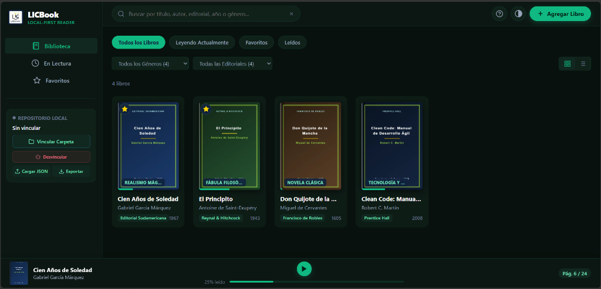
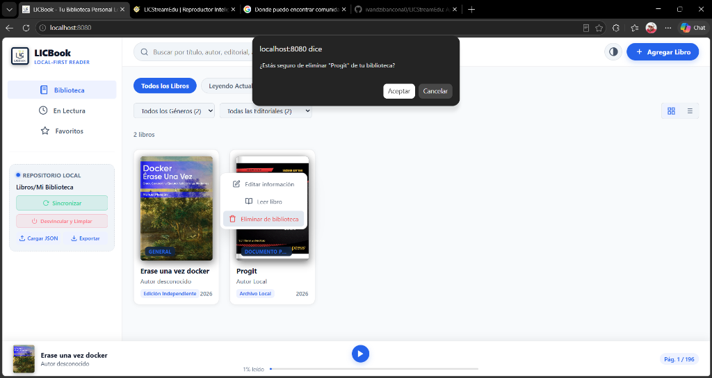
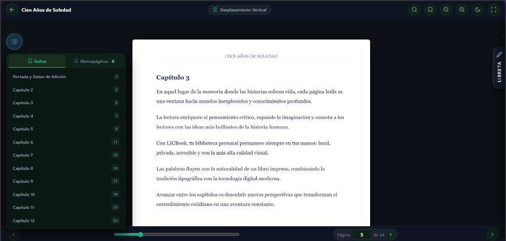
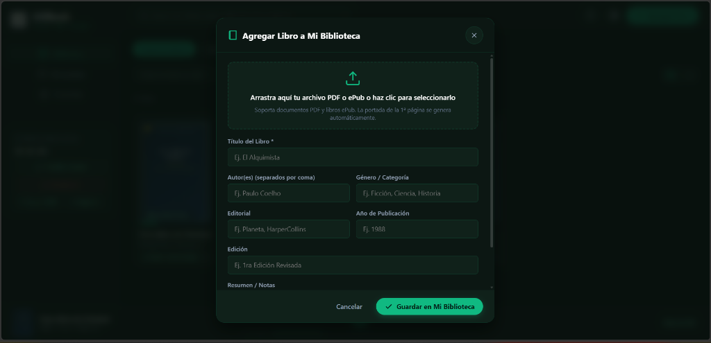
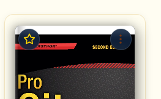
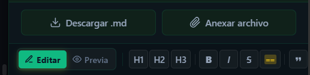

1. Introducción y Filosofía Local-First
LICBook fue concebido bajo el paradigma Local-First (lo local es lo primero). A diferencia de los lectores y servicios en la nube tradicionales, LICBook te otorga la soberanía absoluta de tus libros y apuntes.
Tus libros, portadas, notas personales y marcadores jamás se transmiten a servidores externos ni requieren registrar una cuenta.
La aplicación está empaquetada con todos sus motores (PDF.js, ePub.js, JSZip) en local. Puedes leer en aviones o sin conexión a internet.
Conectas directamente tu carpeta del disco duro mediante la API de acceso al sistema de archivos del navegador moderno.

2. Arquitectura de Almacenamiento y Compatibilidad de Navegadores
Para aprovechar al máximo LICBook, es fundamental comprender cómo interactúa con el sistema de archivos del navegador y en qué situaciones deben utilizarse los botones Vincular Carpeta, Cargar JSON y Exportar.
2.1 Mecanismos de Persistencia
LICBook implementa una arquitectura híbrida de doble capa:
- Capa de Base de Datos Local (IndexedDB): Almacena al instante los metadatos de los libros, páginas leídas, marcapáginas, portadas personalizadas y la libreta de apuntes Markdown. Es compatible con el 100% de los navegadores modernos.
- Capa de Enlace con Disco (File System Access API): Permite seleccionar una carpeta física (por ejemplo,
Mis Libros) para que LICBook lea directamente los archivos PDF y EPUB sin duplicar el peso en el almacenamiento interno del navegador.
La File System Access API (método showDirectoryPicker) es un estándar respaldado por navegadores con motor Chromium (Google Chrome, Microsoft Edge, Opera, Brave). Navegadores como Mozilla Firefox y Apple Safari (macOS / iOS) han restringido esta API por políticas internas de privacidad y espacio aislado (sandbox).
2.2 Matriz de Compatibilidad y Función de los Botones
| Navegador / Plataforma | Vincular Carpeta | + Agregar Libro | Exportar (Backup) | Cargar JSON (Restore) | Solución Recomendada |
|---|---|---|---|---|---|
| Google Chrome (Win / Mac / Linux / ChromeOS) | Nativo | Soportado | Soportado | Soportado | Vincular carpeta directa o agregar libros manuales. |
| Microsoft Edge (Win / Mac) | Nativo | Soportado | Soportado | Soportado | Experiencia nativa completa. |
| Brave / Opera / Vivaldi | Nativo | Soportado | Soportado | Soportado | Requiere conceder permiso al selector de carpetas. |
| Mozilla Firefox (Desktop) | No disponible | Soportado | Soportado | Soportado | Usa + Agregar Libro para añadir archivos y Exportar / Cargar JSON para respaldos. |
| Apple Safari (macOS / iPadOS / iOS) | No disponible | Soportado | Soportado | Soportado | Añade libros con el botón superior y utiliza Cargar JSON para importar tu biblioteca desde la PC. |
| Navegadores Móviles (Android / iPhone) | No disponible | Soportado | Soportado | Soportado | Ideal para sincronizar mediante archivo JSON respaldado. |
2.3 ¿En qué casos usar exactamente "Cargar JSON" y "Exportar"?
- Caso 1: Respaldo de seguridad periódico: Pulsa Exportar antes de limpiar cookies, historial o caché del navegador. Esto descarga un archivo
licbook_backup.jsoncon tus libros, portadas, notas en Markdown y avance exacto de lectura. - Caso 2: Migración entre diferentes navegadores: Si organizas tu biblioteca en Google Chrome y deseas leer en Firefox o Safari, pulsa Exportar en Chrome y luego Cargar JSON en Firefox o Safari. Todos tus datos se reconstruirán automáticamente.
- Caso 3: Trabajo en navegadores sin soporte de carpetas: En Firefox, Safari o móviles, añade tus libros individualmente con
+ Agregar Libroy guarda tus progresos mediante Exportar. - Caso 4: Compartir notas o estanterías: Puedes transferir el archivo JSON generado a otro equipo para continuar exactamente donde lo dejaste.
3. Barra Superior y Búsqueda Global
La barra superior está fijada permanentemente y proporciona acceso a la búsqueda instantánea y a las funciones de personalización y alta de libros.
| Elemento / Botón | Icono / Aspecto | Acción y Función Detallada | Atajo |
|---|---|---|---|
| Logotipo y Título | LICBook Logo | Recarga la vista principal y restablece los filtros al estado inicial. | — |
| Campo de Búsqueda | Buscar por título... |
Filtro dinámico en tiempo real. Busca por título, autor, editorial, año de publicación o género sin recargar la página. | Clic en barra |
| Limpiar Búsqueda | ✕ | Aparece cuando hay texto ingresado en la búsqueda. Borra el término y restaura el catálogo completo. | Esc |
| Recorrido Guiado | ? | Inicia el tour interactivo paso a paso de 6 fases para usuarios nuevos o para repasar controles clave. | — |
| Personalizar Tema | ◐ | Despliega la ventana modal con la galería de los 8 temas de color exclusivos de LICBook. | — |
| + Agregar Libro | + Agregar Libro | Abre el modal para importar un archivo PDF o EPUB al catálogo, asignar portada y rellenar sus metadatos. | — |
5. Catálogo de Libros, Filtros y Opciones
Visualiza tu colección mediante portadas de alta calidad gráfica o mediante una lista compacta para administración rápida.
5.1 Píldoras de Filtro y Selectores
- Todos los Libros: Desactiva cualquier filtro de estado y muestra la colección entera.
- Leyendo Actualmente: Filtra libros con lectura iniciada.
- Favoritos: Obras marcadas con estrella.
- Leídos: Obras con el 100% de progreso completado.
- Desplegable "Todos los Géneros": Filtra por categorías (p. ej., Novela Clásica, Realismo Mágico, Tecnología).
- Desplegable "Todas las Editoriales": Agrupa por casa editorial.
- Alternador de Vistas:
- Botón ⊞ (Cuadrícula): Estantería visual con portadas y lomo tridimensional.
- Botón ☰ (Lista): Tabla compacta con columnas de título, autor, editorial, género y barra de progreso.
5.2 Interacción con la Tarjeta de Libro
Cada tarjeta cuenta con controles directos:
- Clic en la portada o título: Abre de inmediato el libro en el Lector Avanzado en la última página leída.
- Estrella dorada: Alterna rápidamente el estado de favorito.
- Botón de tres puntos (⋮): Despliega el menú contextual con las siguientes acciones:
- Editar: Abre el formulario modal para corregir título, autor, portada personalizada, editorial o sinopsis.
- Marcar como Favorito / Quitar: Alterna el distintivo de preferencia.
- Eliminar: Solicita confirmación para remover el libro de la biblioteca.
6. Ventana Modal de Confirmación para Eliminar Libro
Para evitar pérdidas accidentales y cumplir con estándares de interfaz moderna, LICBook reemplaza los mensajes predeterminados del navegador con una ventana modal de confirmación de alta fidelidad visual.

| Botón del Modal | Estilo Visual | Acción |
|---|---|---|
| Cancelar | Cancelar | Cierra la ventana modal sin efectuar ningún cambio en la biblioteca ni en los archivos del disco. |
| Eliminar | Eliminar | Elimina el registro del libro, sus notas asociadas y su portada de IndexedDB de manera definitiva. |
| Cerrar (✕) o Tecla Esc | ✕ | Equivale a cancelar la operación y regresa al catálogo. |
7. Mini-Reproductor Inferior Persistente
Inspirado en la ergonomía de reproductores como Spotify, la barra inferior permite retomar lecturas activas en cualquier momento con un solo clic.
Miniatura y Datos de la Obra
Muestra la portada miniatura, el título y el autor del libro en curso o leído más recientemente.
Botón Continuar Lectura (▶)
Abre el libro instantáneamente y te sitúa exactamente en la página o párrafo donde interrumpiste la sesión.
Barra y Porcentaje de Avance
Indicador visual del progreso (ej. 25% leído) junto con el número de página actual sobre el total.
8. Lector Avanzado y los 3 Modos de Visualización
El lector integrado ofrece tres modos ergonómicos de visualización adaptables a cualquier tipo de libro o preferencia personal.

Los 3 Modos de Lectura
Páginas continuas en scroll fluido. Es el modo más ágil para documentos técnicos, textos con diagramas o lectura en monitores ultra-anchos.
Pasa páginas una a una de izquierda a derecha sin desplazamiento vertical, manteniendo la vista fija en la caja de texto.
Simula un libro físico impreso con perspectiva tridimensional, curvatura en el pliegue central y animación realista al pasar la página.
Puedes alternar entre los tres modos en cualquier momento haciendo clic en el botón central de la barra superior del lector: Desplazamiento Vertical / Paginación Horizontal / Efecto 3D.
9. Herramientas y Controles del Lector
Controla la tipografía, búsqueda, marcapáginas y zoom mediante la barra de herramientas superior e inferior.
| Botón / Control | Icono | Función y Comportamiento | Atajo |
|---|---|---|---|
| Volver a Biblioteca | ← | Guarda el progreso actual y regresa a la estantería general. | Esc |
| Búsqueda Interna | 🔍 | Despliega la barra de búsqueda de texto dentro del libro (PDF o EPUB), con navegación de coincidencias anterior/siguiente. | Ctrl + F |
| Marcapáginas | 🔖 | Guarda la página actual en la pestaña de marcapáginas para consultarla rápidamente más tarde. | — |
| Zoom (- / +) | 🔍- / 🔍+ | Aumenta o reduce el tamaño de escala del documento para mejorar la legibilidad. | — |
| Tema de Lectura | 🌙 | Alterna entre tema de lectura Claro (fondo blanco clásico) y Nocturno (alto contraste oscuro que descansa la vista). | — |
| Pantalla Completa | ⛶ | Maximiza el visor eliminando barras del navegador para una experiencia 100% inmersiva. | F11 |
| Botón Flotante Índice (Izquierda) | ☰ | Despliega el menú con dos pestañas: Índice de capítulos y Marcapáginas guardados. | — |
| Pestaña Libreta (Derecha) | 📝 LIBRETA | Abre el cajón lateral con el bloc de notas Markdown vinculado al libro actual. | — |
| Paginador Inferior | ‹ [5 / 24] › | Contiene botones de página anterior/siguiente, barra deslizadora de arrastre (slider) y caja numérica para saltar a una página específica. | ← / → |
10. Libreta de Apuntes Integrada (Estilo Obsidian / Markdown)
Toma apuntes mientras lees sin necesidad de salir de la aplicación. Las notas se sincronizan automáticamente con cada libro y soportan sintaxis rica en formato Markdown.

10.1 Botones de Acción de la Libreta
| Botón | Texto | Acción Detallada |
|---|---|---|
| Descargar | ⬇ Descargar | Descarga inmediatamente un archivo .md con todas tus notas formateadas para abrirlas en Obsidian, Logseq, Notion o VS Code. |
| Anexar texto | 📎 Anexar texto | Abre el selector de archivos para adjuntar el contenido de cualquier archivo .txt o .md externo directamente al final de tus apuntes actuales. |
| Pestaña "Editar" | ✏ Editar | Activa el editor de texto plano con soporte completo de atajos Markdown y autoguardado. |
| Pestaña "Previa" | 👁 Previa | Renderiza en tiempo real el texto como documento tipográfico limpio (encabezados, resaltados, listas interactivas de tareas y citas). |
10.2 Barra de Herramientas de Formato Markdown
| Herramienta | Botón | Sintaxis Generada | Resultado Visual |
|---|---|---|---|
| Encabezado 1 | H1 | # Título Principal |
Encabezado de primer nivel grande |
| Encabezado 2 | H2 | ## Subtítulo |
Subtítulo de segundo nivel |
| Encabezado 3 | H3 | ### Sección |
Sección de tercer nivel |
| Negrita | B | **texto en negrita** |
texto en negrita |
| Cursiva | I | *texto en cursiva* |
texto en cursiva |
| Tachado | S | ~~texto tachado~~ |
|
| Resaltado Obsidian | == | ==texto resaltado== |
Texto con fondo fluorescente estilo marcador |
| Cita | " | > Frase célebre o extracto |
Bloque de cita indentado con barra vertical |
| Lista con viñetas | • | - Elemento de lista |
Viñeta circular ordenada |
| Lista de tareas | [ ] | - [ ] Tarea pendiente |
Casilla de verificación interactiva (Checklist) |
| Bloque de código | <> | `código en línea` |
Tipografía monoespaciada con fondo sutil |
11. Personalización: Los 8 Temas de Color
LICBook incluye un motor de diseño armónico que recalcula contrastes, bordes, brillos y tipografías en toda la aplicación.

| Nombre del Tema | Tipo | Paleta y Atmósfera | Ideal para |
|---|---|---|---|
| Cyber Emerald | Oscuro | Fondo verde petróleo profundo con acentos en verde menta fluorescente. | Tema por defecto, moderno y energizante. |
| Lemon Ice-Cream | Claro Pastel | Fondo crema suave y vainilla con acentos en amarillo limón y menta fresca. | Ambientes luminosos con contraste suave. |
| Obsidian Dark | Oscuro Puro | Fondo negro obsidiana con acentos en azul índigo minimalista. | Concentración máxima y pantallas OLED. |
| Iron-Man | Oscuro Cálido | Armadura carmesí granate con acentos dorados y resplandor de reactor Arc. | Estética vibrante de alto impacto visual. |
| Nordic Frost | Oscuro Frío | Azul polar ártico profundo con acentos en cian glaciar. | Lectura serena y técnica. |
| Sunset Amber | Oscuro Cálido | Carbón tostado con acentos en naranja ámbar y fuego suave. | Lectura nocturna relajante. |
| Clean Light | Claro Puro | Blanco nieve con bordes en gris pizarra y acentos azul tecnológico. | Uso en oficinas o al aire libre. |
| Dracula Classic | Oscuro Gótico | Púrpura noche con acentos en rosa neón y cian vibrante. | Desarrolladores y amantes de la estética synthwave. |
12. Recorrido Guiado Interactivo (Tour)
El asistente integrado orienta paso a paso a nuevos usuarios a través de los elementos neurálgicos de la aplicación.

El recorrido consta de 6 pasos estratégicos con posicionamiento adaptativo garantizado:
- Paso 1 - Repositorio Local: Vinculación de carpetas de libros en disco.
- Paso 2 - Buscador Global: Búsqueda en tiempo real de títulos y autores.
- Paso 3 - Temas de Color: Personalización estética entre los 8 temas.
- Paso 4 - Agregar Libros: Carga manual de archivos y edición de metadatos.
- Paso 5 - Vistas Cuadrícula / Lista: Organización visual de la estantería.
- Paso 6 - Lector y Libreta: Apertura de obras, modos 3D y apuntes Obsidian.
13. Tabla Maestra de Atajos de Teclado
Aumenta tu velocidad de lectura y navegación utilizando las combinaciones de teclas admitidas en la aplicación.
| Atajo | Contexto | Acción |
|---|---|---|
| Ctrl + F / Cmd + F | Lector Abierto | Abre o enfoca la barra de búsqueda de texto interna en el libro. |
| Esc | Global | Cierra modales, menús flotantes, cajón de notas o sale del tour guiado. |
| → / Espacio / AvPág | Lector Paginado / 3D | Avanza a la página siguiente. |
| ← / RePág | Lector Paginado / 3D | Retrocede a la página anterior. |
| Ctrl + B | Libreta de Notas | Aplica formato negrita al texto seleccionado (**texto**). |
| Ctrl + I | Libreta de Notas | Aplica formato cursiva al texto seleccionado (*texto*). |
| Enter o → | Recorrido Guiado | Avanza al siguiente paso del tour. |
| ← | Recorrido Guiado | Regresa al paso anterior del tour. |
14. Preguntas Frecuentes (FAQ)
¿Dónde se guardan mis libros y notas?
Se almacenan de manera local y encriptada en la base de datos IndexedDB de tu propio navegador. Ningún dato viaja a través de Internet.
¿Qué ocurre si cambio de navegador?
Usa el botón Exportar en tu navegador actual para descargar el archivo JSON, abre LICBook en tu nuevo navegador y presiona Cargar JSON.
¿Qué formatos de archivo puedo leer?
LICBook soporta de manera nativa archivos en formato PDF (estándar Adobe) y libros electrónicos EPUB (versiones 2 y 3).
¿Puedo usar la aplicación sin servidor local?
Para que los Web Workers de PDF y la lectura de EPUB funcionen sin restricciones de seguridad del navegador, se requiere ejecutar mediante un servidor HTTP local (como python -m http.server, Live Server o npx serve).